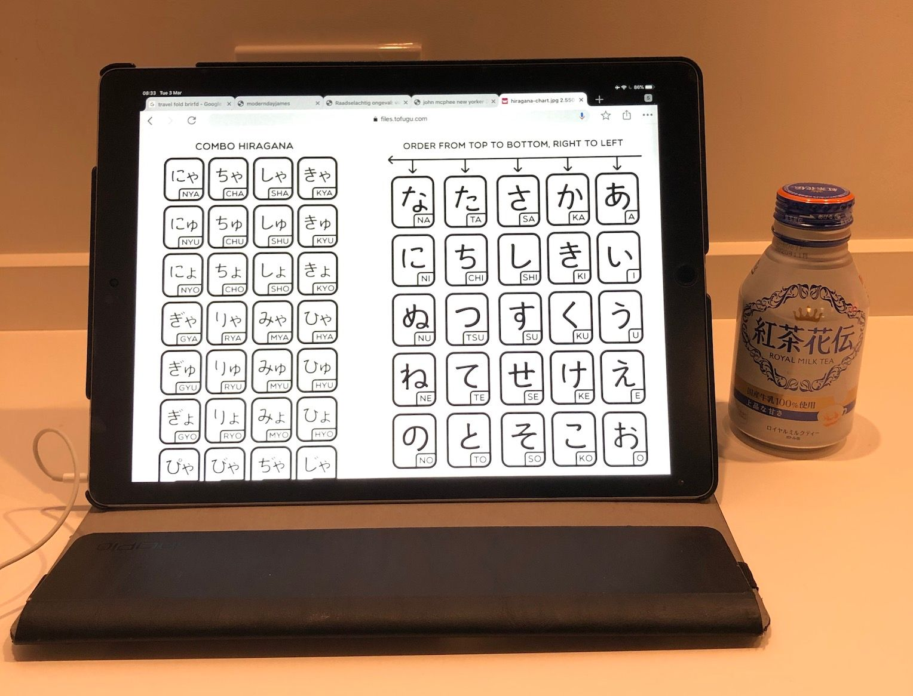

Why Japanese
In March 2020, I arrived at Tokyo’s Narita International Airport, shortly before the COVID-19 pandemic caused the borders to close to foreigners. During the bus ride to my hotel, I noticed what I assumed to be a ‘stop’ button. It displayed an entire and lengthy sentence in Japanese, which seemed like a lot for a button with such a simple function. My first guess was that it meant something like ‘push this to request a stop.’ Then doubt began to creep in as I stared at the long string of unfamiliar characters. What if it conveyed a completely different message, a critical one such as ‘Push this button in case of a medical emergency; Misuse by newly arrived foreigners may result in deportation’? What if I were to create an embarrassing scene within my first hour in the country? A situation so awkward that I would feel no other option than to immediately head back to the airport, book a return ticket, and sumimasen myself all the way to the back of the airplane?
I admit that I can become anxious or socially awkward when visiting new places. I’m also quite adept at imagining overblown situations. However, there was another factor. This was Japan, the land where people make a constant effort to avoid inconveniencing anyone. People traveling to Japan for the first time will often feel this at the beginning – the worry of doing anything wrong and the awareness that if you do, people around you are being too polite to point it out.
As I looked out the window and watched izakayas and other small eateries with their hand-painted signs whizz by, I realized that most things in Japan don’t come with translations. Anxiety crept in as I worried about how difficult it would be to navigate by myself, not knowing how to read or speak a single word of Japanese.
A Vending Machine and Time to Kill
During breakfast the following morning, anxiety turned into curiosity as I examined the assortment of drinks in the hotel lobby’s vending machine. An app on my phone could have easily scanned and translated the Japanese characters on these soda cans. However, I didn’t want to feel like a tourist. With some spare time before meeting a friend later that morning, I searched the internet for ways to learn these characters.
I learned both the Hiragana and Katakana scripts at the beginning of my five-month stay in Fukuoka. These are the easy-to-learn phonetic scripts that makeup only a fraction of the characters used in Japan. While they allowed me to read of the product labels at the convenience store and somewhat impress my roommates at the artist-in-residency where I was staying, they didn’t take me very far when navigating in Japan. Most of the time, I found myself scratching my head while looking at buttons and signs, often having to rely on asking for help, or worse, resorting to using my phone to scan things after all.
A Nagging Feeling And The Decision to Learn
My five months in Japan were filled with great experiences, new friendships, and an even greater appreciation for Japanese culture. Yet, upon returning from my trip, I couldn’t help but feel a lingering sense of having somewhat missed out. Most of that feeling had to do with not being able to fully participate. There were Buddhist temples and Shinto shrines whose signs I couldn’t read. Tea ceremonies where I politely smiled but didn’t understand a word. At a Zen temple, where my roommates and I participated in a guided meditation session, one of the participants, originally from the United States but now living in Japan, reluctantly became our translator, likely ruining his own experience. In moments like these, I felt that I was interfering with what was happening instead of blending in with the experiences.
I’ve never been bothered by not speaking the language when traveling; often, it adds to the charm of visiting new countries, and even learning a few words can be enjoyable. But Japan was different. It wasn’t just a passing interest but a culture I had been fascinated with since childhood, and one I desperately wanted to fully immerse myself in. This lingering feeling of missing out eventually fueled my desire to seriously study the language.
 Checking out Kana for the first time in my Hotel Lobby.